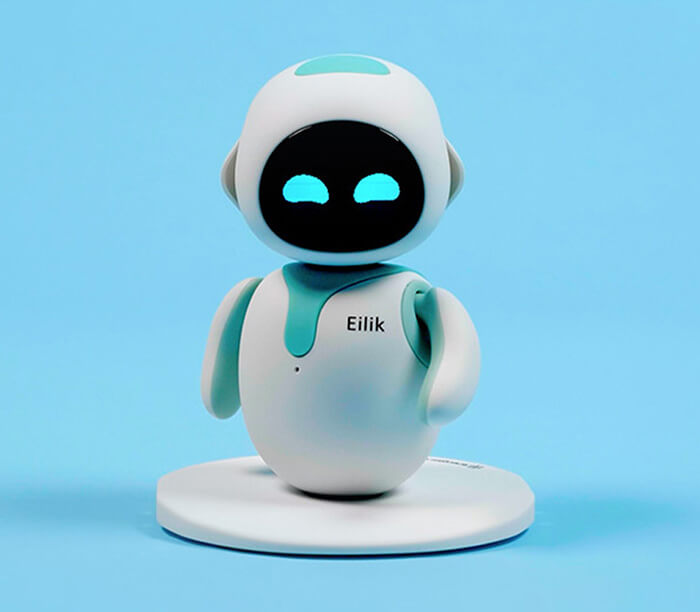

Eilik - Hissiy intellektga ega ish stoli roboti, sizning uyingizda yoki ish joyingizda mukammal interaktiv hamrohingiz. Sevimli robot uy hayvonlari, bolalar, qizlar va o'g'il bolalar uchun noyob sovg'a.ISH KUNINGIZNI YOSHLASH: Eilik to'rtta asosiy hissiy holatga asoslangan juda ko'p ichki faoliyatga ega: normal, baxtli, g'azablangan va qayg'uli.
CHEKSIZ QIZIQCHI YO'Q ROBOT: Eylikning boshini, qornini va orqasini erkalab ko'ring. Uning shaxsiyati sizning u bilan bo'lgan munosabatingizga javoban rivojlanmoqda.
YANA BIR EILIK, YANA QIZIQARLI: Ular bu yovvoyi dunyoda bir-birlarini taniydilar, o'ynaydilar va bir-birlari bilan do'stlik (yoki jang) o'rnatadilar.
VAQT BO'YICHA VA O'YINCHI: Eilik ko'plab o'rnatilgan funktsiyalar va interaktiv o'yinlarga ega.
ENERGIZE LAB Eilik iboralari, harakatlari, hikoyalari va raqslarini loyihalash va ishlab chiqish uchun professionallar jamoasiga ega. Dasturiy ta'minot yangilanishlari (Windows va Mac OS-ni qo'llab-quvvatlash) orqali rivojlaning va har bir Eilik cheksiz imkoniyatlarga ega.
